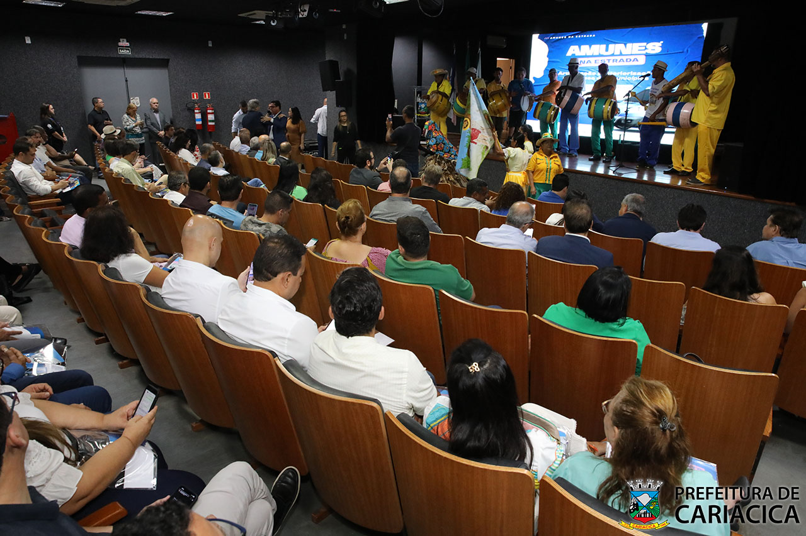

Localizado na Secretaria Municipal de Cultura e Turismo de Cariacica, o Teatro do Centro Cultural Frei Civitella Del Tronto funciona no primeiro piso do prédio, contando com ambiente climatizado e capacidade para 169 espectadores (165 assentos comuns, 2 assentos reservados para cadeirantes, 1 assento reservado para pessoa obesa e 1 espaço reservado para cão guia), além de um palco com dimensão de 11,34 x 5,74m, de altura 3,36m, e dois camarins equipados com banheiros acessíveis e acesso direto ao palco. Elevadores para pessoas com deficiência foram instalados tanto para o público, no lado de fora, quanto na lateral do palco, para os atores, garantindo a acessibilidade de todos. O espaço tem também uma sala de audiovisual.
O funcionamente e utilização do Teatro Frei Civitella são regidos pelo Decreto Municipal nº 178/2016, com alterações do Decreto nº 228/2022, onde o Art. 2º diz: "A utilização do teatro do Centro Cultural Frei Civitella destina-se à realização de atividades de valor artístico-cultural, adequados ao espaço físico, comprometido com a diversidade cultural e a difusão cultural, com ações socioculturais para a promoção da cidadania, de formação profissional, atos públicos solenes, de natureza oficial, e congressos, seminários e demais eventos similares."
O Secretário Municipal de Cultura e Turismo de Cariacica determina a autorização quanto ao uso do teatro, sendo que o controle das reservas de data para utilização do espaço é de responsabilidade da CAC - Coordenação de Ação Cultural. Setor este que recebe a solicitação, avalia a disponibilidade de data e enquadramento da reserva em conformidade ao que estabelece o Decreto Municipal nº 178/2016 , e encaminha ao Secretário para final aprovação.
Para solicitar a utilização do teatro do Centro Cultural Frei Civitella Del Tronto, basta acessar a página "RESERVAR" e preencher sua solicitação. Logo após o preenchimento, será redirecionado para a página "CONSULTAR", onde é exibido seu código de solicitação, o qual poderá utilizar para consultar a situaçãop de sua solicitação, posteriormente. Então, NÃO esqueça de anotar o código de protocolo após sua solicitação.